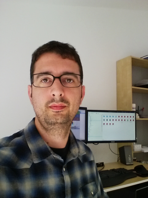
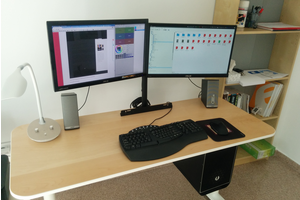

Carlos
Coves Prieto


The only way to go fast is to go well
In my last years as a supply chain engineer, I became interested in programming and open source collaboration. After a casual meeting with an Agile developer, I discovered TDD, Clean Code and SOLID principles. Now I am a test-first coding believer.
The heading is a quote from Robert C. "Uncle Bob" Martin. The photo shows my desktop, which runs i3 window manager under Arch Linux, my favourite distro.
Back to Full Profile